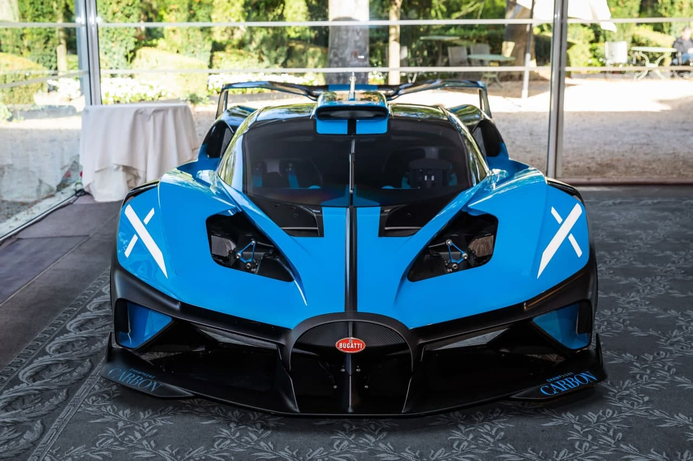
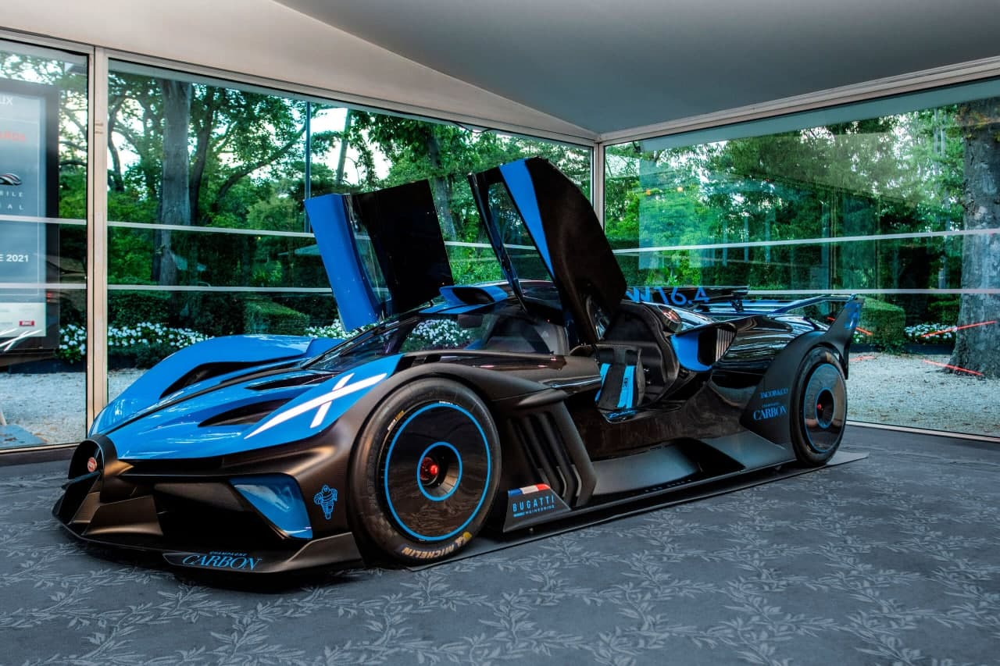
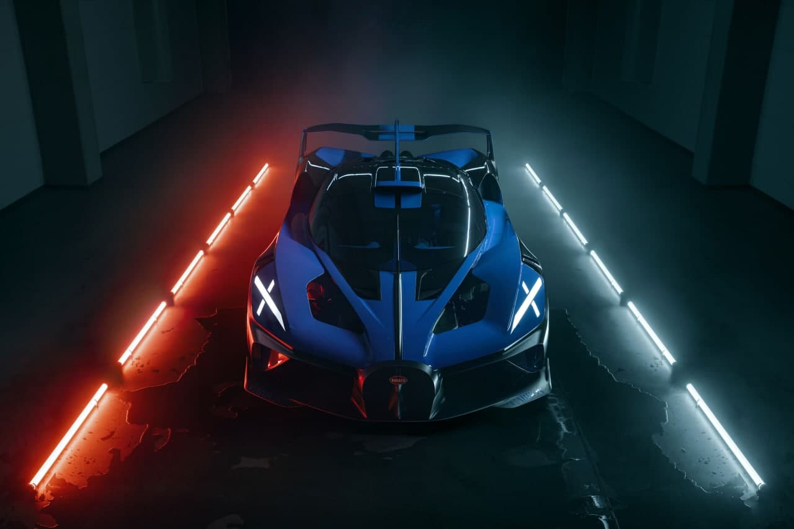
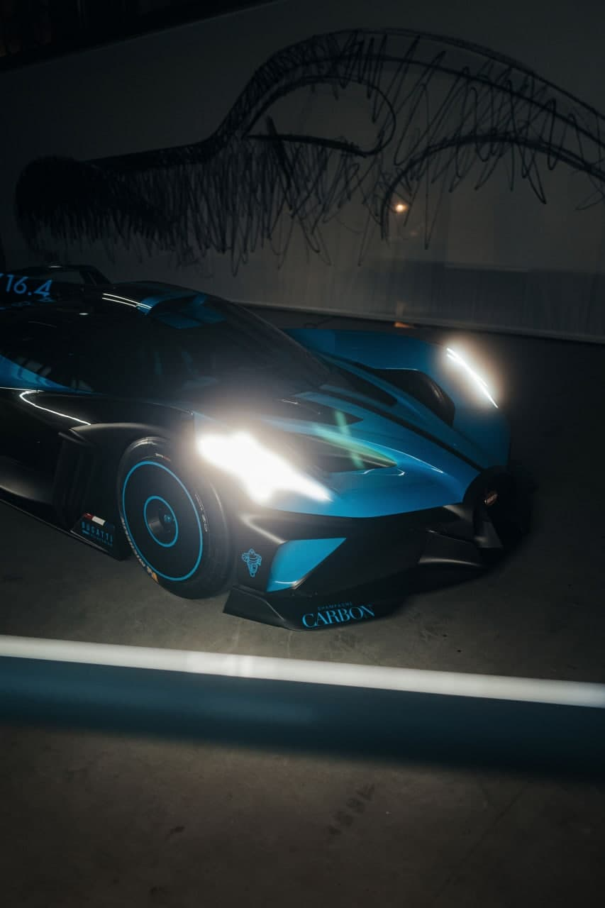

2021 yilda Bugatti Bolide Parijdagi 36-avtomobil festivalida dunyoning eng chiroyli giperkari deb topildi.
Mashina 1882-yilda tashkil etilgan.
Ushbu model 2020 yil oxirida konsept sifatida namoyish qilingan.
Mashina 1450 kg og‘irlikka ega bo‘lib, uning dvigateli 1600 ot kuchini beradi.
Giperkarlar yo‘nalishida ushbu nomga da'vogarlik qilgan boshqa 3 ta model nomi
keltirilmagan. Biroq tanlov qodalariga ko‘ra, g‘oliblikka nomzod giperkarlar “sport
dizayniga va yuqori ko‘rsatkichlarga ega bo‘lgan” hamda narxi 60 ming yevrodan yuqori
turuvchi seriyali ishlab chiqariluvchi avtomobillar bo‘lishi kerak.
Ushbu model 2020 yil oxirida konsept sifatida namoyish qilingan. Joriy yilda esa fransuz
kompaniyasi ushbu avtomobildan 40 dona ishlab chiqarishini, biroq ular umumiy
foydlanish ko‘chalariga qo‘yilmasligini e'lon qilgan.
Ma'lumotlarga ko‘ra, giperkarga joyidan qo‘zg‘alib, 100 km/soat tezlikka erishishi uchun
2 soniyadan kamroq, 200 km/soat tezlikka 4,36 soniya, 300 km/soat tezlikka erishishi
uchun esa 7,37 soniya vaqt talab etiladi. Shu bilan birga, kompaniya mashinaning hattoki
500 km/soatgacha tezlashishi mumkinligi haqida gapirib o‘tgan. Buning uchun
mashinaga 20,16 soniya vaqt kerak bo‘ladi.
Bundan tashqari, festivalda Audi Q4 E-Tron Sportback eng chiroyli shou-kar, DS Aero.
Sport Lounge eng chiroyli konsept deb topilgan. Mercedes-Benz Vision AVTR futuristik
avtomobillar toifasida, Maserati MC20 esa superkarlar toifasida eng chiroyli deb e'tirof etilgan.